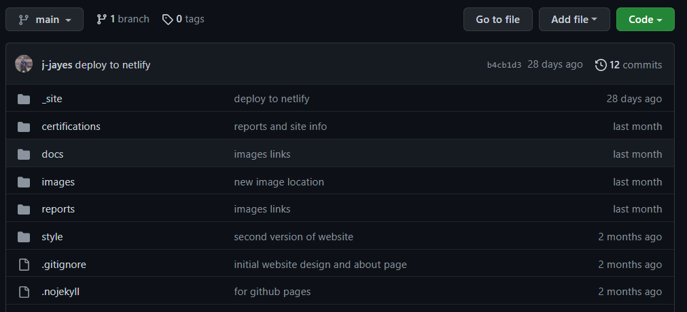

knitr::include_graphics("images/github_home.PNG")
Dear Kbae, I’m so stoked that you will be a website gal!
This page includes the instructions for how to update this website. There’s a part explaining how it works first, and then what you need to do to make changes next.
The website is created from code stored in a github repository on my github, which you can see here:
Any time the code in folder called _site changes, the website will automatically update. To update the contents of the _site folder, you simply make changes to the quarto documents (ending in .qmd) that control the website, call quarto::quarto_render inside Rstudio and then push the changes to github.
You’ll have to create a github account and then I can add you as a collaborator on the repository so that you can push your changes directly.
We can break down the site into content, layout and style, e.g.
You’ll want to change content most frequently, so we will start with that.
The site content is made up of different Quarto documents (files that end in .qmd) that are rendered into HTML.
You make changes to these Quarto documents, call the command quarto::quarto_render() and then the HTML is created and the output is placed in the _site folder.
The main one is called index.qmd. It determines the content on the main page.
Making changes to quarto documents is super easy, it’s just markdown - a language that is easy for humans to read.
A quarto file has a YAML section at the top, and then markdown below. An example is shown below.
---
title: "Example report"
author: Katherine Brown
date: 03-01-2022
image: "https://raw.githubusercontent.com/j-jayes/kb/main/reports/julia-taubitz-0dFnhliQ82w-unsplash.jpg"
description: "Description of post goes here!"
---
This report was very important and had a big impact! Here is how you can make a [link](https://github.com/j-jayes/kb) to access it.The layout of the website can be changed in the _quarto.yml file. For example if you want to add new items on the navigation bar at the top, or change the title, this is where you would do it.
The style of the website, including the fonts and colours, are set with the files called style_blue.css and theme.scss.
To update this site, you need to have the website building tool called Quarto installed. You also need R and Rstudio installed, and the quarto package for R.
As an analogy, think of a car. Quarto is the engine, and Rstudio is the steering wheel. You don’t control Quarto directly, you steer in Rstudio.
To install Quarto onto your computer, follow the Get Started guide.
Quarto® is an open-source scientific and technical publishing system built on Pandoc
I assume that you have R and Rstudio installed, but if not, you can follow this guide from Modern Dive.
I don’t think there is a need to explain Git and Github here. They are amazing and if you are interested then this guide from Jenny Bryan is the best resource. She lays out exactly how the two differ here. All you need to know to update the website is that before making changes you have to use git pull in the terminal, make your changes, then commit these changes and push them to Github. Then the website automatically updates.